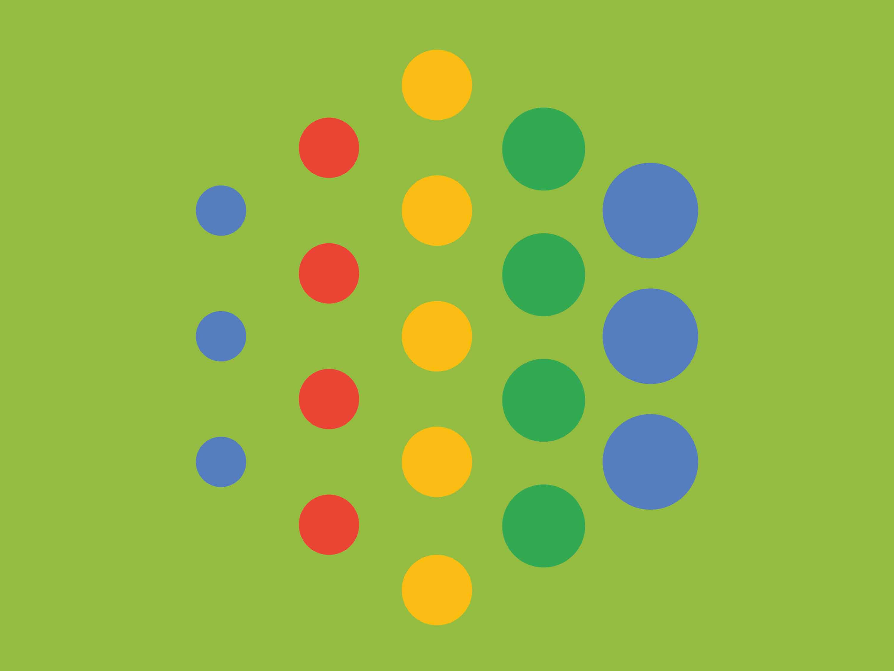

The task
Your school wants to improve the upkeep of campus facilities by creating a new system for reporting any facilities that may need maintenance or repair. Design an experience that allows students to report building or equipment issues on campus. Consider the process of those filing the report and of those receiving and taking action on the issues.
The start of my journey
When first approaching this exercise, I thought it would be a good idea to organize my thoughts and ideas while tackling this problem. I researched the current maintenance and repair system for universities and realized that the tactics used now are still outdated. The most popular tactic being students calling in and reporting the issue to administrative staff only to wait an eternity with no feedback.

So, what is the problem?
I realized the only way for you to measure the success of your report was to simply wait and see if what you wanted to be fixed or maintained hopefully happened. This was not an effective way to update users reporting the tickets which made me question why that was the case. I decided to delve deeper to see if I can uncover any additional pain points that were either unique or similar so they could be grouped. Once that was done, I wrote down the information regarding the pain points along with the UI and Google products I planned on integrating. You can view everything I did below.
Filtrations
- Maintenance or repair
- Building or equipment
- Scale - minor to severe
- Location
- Reoccurring or new
- Indication for reoccurrence
Pain points
- Slow ticket process
- Reoccuring damages require another ticket
- Duplicated tickets slow queue
- Feedback on ticket can only be measured by whether or not the issue has been resolved
- Lack of visuals to exactly pinpoint what people want fixed or maintained
Google Integrations
- Google Firebase for storing data and securing user information
- Google Maps to pinpoint locations for repair and maintenance
- Google Now for notifications
- Google Search Engine for searching local repair and maintenance companies
Primary UI Students
- Ticket submission button - damage report
- Google Maps API
- Pinpoint color - in progress or completed
- Last updated - repair or maintenance of start or completion date
- Notifications - reviewed, complete!
- Upvote or comment section
Primary UI Admins
- Ticket review button
- Google Maps API
- Pinpoint color - in progress or completed
- List of all tickets in different categories depending on filters: completed, ongoing, new w/ scale, reoccurred, most popular, date
- Notifications - reviewed
- Upvote or comment section
Secondary UI Both
- Share to social media
- Contact or email support
- Profile Settings
How do I fix this?
From my brainstorm of thoughts and ideas, I summarized the pain points I wanted to focus on into three distinct goals that I would like to achieve.
The goals:
- Alleviate inefficient and time-consuming ticket queues
- Minimize repetitive tickets to reduce queue overload
- Continuously update users and admins on repairs and maintenances while keeping them clear and concise
Who needs Sketch?
With the research and requirements clearly outlined, I was ready to begin. I made sure to stick closely to the three goals I set out for myself to accomplish as I was designing my application. Initially, I wanted to design my low fidelity design using Sketch, however, I own a PC, so it was unavailable (sad violin music) Being the undeterred person as I am, my next best solution was Adobe Illustrator which was painstakingly long but gave me the results I was looking for.

For navigation, I opted for 3 selective views: pinpoint map, ticket submission or reviews (depending on the user) and user settings
Besides the ticket submission tab, I kept the other tabs as similar as possible because I felt that both parties should have the same simple experience. Also, implementation can be quite painful when it feels like there are two apps in one.
For filing and receiving the report, I tried to make the fill out form straightforward and clear to cover all various incidents of repairs and maintenances. I also requested users to attach images because in my experience, visuals are always helpful in understanding a problem.
Now we move onto the meat and potatoes of user flow:
Onboarding

The login page is very simple, having a username and password along with a picture of the mend logo on it. I did this purposefully to make the app less daunting and to maximize user-friendliness.
The signup page differentiates between students and administrators by asking them to input their ID on top of selecting who they are in a drop-down menu. By requesting their ID, it can deter users from falsifying their identities and faking tickets as misrepresentations can be immediately identified by the administration.
Google Firebase will verify and approve all credentials during the signup phase as users are shown a nice loading animation before being taken to the map interface. If there is something invalid with their information, they will be redirected back to the signup page.
Exploration

For the Student UI, they are introduced to a map that displays their current location and allows them to search for an area of which a repair or maintenance is required.
The pinpoints on the map represent the tickets that have been filed. These pinpoints will represent two colors (orange-red = in progress, green = completed) to indicate the status of the ticket and to visualize issues that have been resolved. The resolved tickets will slowly fade within a month after completion to be stored into a database.
Students can also click on these pinpoints to view the information regarding the ticket including the expected date of repair (if in progress), severity and other details.
Moreover, a button is available to the right of their location on the map to make it straightforward for students to file a report. Once a report has been submitted, they are directed to a confirmation message that their ticket has been submitted and will directed back to the map. If their ticket has been accepted for repair or maintenance, they will be notified of the date and when it is completed.

Administration UI mainly focuses on the ticket tab. For the map, instead of a submission ticket button, they are given a review button to analyze tickets. When clicked, they will be shown all tickets which can be organized accordingly using the filters.
The filters organize the bombardment of tickets which alleviates stress. Administrators can swipe left on a ticket to reveal a delete and update button. They can use the delete button to remove any tickets that are similar or ineligible. On the other hand, the update button is used to change ticket statuses from in progress to complete. It can also be done vice versa for maintenance purposes where it is continuous.
Administrators can resolve a ticket and can edit the information on it before publishing it on the map for viewing. This is to avoid the possibility of inaccurate information or inappropriate descriptions in the report from being released to the public.
Lastly, if administrators have trouble finding a suitable company to resolve the issue, I opted for administrators to use the Google Search Engine to assist them.

I wanted to discuss this exclusively because it is my favorite one out of all the panels. Previously, I mentioned that when a user clicks on a pinpoint, they are introduced to all details regarding a ticket.
Below there is a secondary ticket option that will become available for when an issue is resolved but reoccurs. It will redirect students to the same process for submitting a ticket but administrators will recognize that this ticket is a reoccurrence.
Now if you look closely you will see a huge thumbs up button which is for student purposes only, however, administrators can use it too. This function allows students to bring awareness to the issues that may seem minor to administrators but very important to students.
For example, water from a fountain at the gym tastes really weird so a report is filed. It is considered a minor issue but heavily affects a lot of students so upvoting the issue will tell administrators that it needs to be fixed ASAP.
Furthermore, there are additional icons on the top right. The first one is a sharing icon so students and administrators can take to social media to share with others. The second one is a bell icon for students to save a ticket to receive notifications of when that ticket is being resolved or has been completed.
High Fidelity
I have chosen three specific panels to do a high-fidelity design on because it addresses the necessary look and feel of the app. Below you can see I opted the app to be the color green because it is a sign of health and positivity. I believe it works well with repairs and maintenances because you're restoring things to their original state.

The Map
The pinpoints on the map are used to represent an issue and its status can be indicated by a specific color (orange-red = in progress, green = complete) I wanted the map to be a light color to easily find the pinpoints on the map as well as make it easier on the eyes. The map itself is movable by swiping around and can be zoomed in or out by pinching the screen.The Ticket
The most boring yet important one is the ticket which displays all core information for a report to be filed and resolved. Everything is clearly outlined for users to fill out the necessary information in an efficient manner.The Pinpoint Details
The pinpoint details display pictures of what the current issue is and can help for visualization. All basic details are highlighted below the images and a description is provided for them to read. The goal is to inform other students and allow administrators to easily refer back to the issue. FYI, the phone was elongated to fit all functionalities (no phone like that exists or was harmed in production)Conclusion but what's next?
Overall, I believe my application modernizes the reporting system of post-secondary institutions and can be expanded onto other infrastructures. I believe my app can be made more efficient and should focus more on the communication aspect since it can still be lost in the queue. To accomplish this, I want to incorporate more Google products that would leverage accessibility which you can learn more about below.Utilizing Google Cloud
If I had more time to execute this application, I would focus on integrating Google’s Cloud Storage to create a database that stores all tickets that were completed which I lightly touched upon previously. This can reduce repetitive tickets even further and give administrators better control of information over the problems that students experience on campus facilities.Utilizing Google Brain
For even further down the future, I would like to leverage Google’s A.I. capabilities to be able to assess a situtation and document the issue through visuals and descriptions to create an instant report that is sent to administrators. This will eliminate the need for filing a report entirely which greatly reduces time consumption and can minimize human error.

Goodbye
But of course, these ideas take a lot of time and thought before it can be executed to perfection. As the saying goes, you can only mend things one step at a time.Thanks for sticking around!